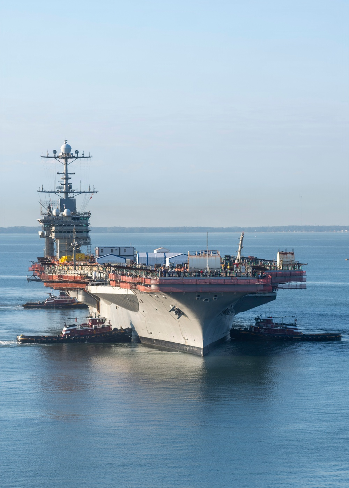

SN Oliver McCain Vieira / U.S. Navy · DVIDS 10049569 · Public domain · The Nimitz-class aircraft carrier USS Harry S. Truman (CVN 75) arrives at Newport News Shipbuilding, Sept. 30, 2026, to begin its refueling and complex overhaul.
USNI News
Growing the Navy's fleet by 112 ships over the next three decades would cost about $234 billion more than the service's own budget estimates, an 18 percent overrun requiring a 41 percent increase in the Navy's annual shipbuilding budget, a new Congressional Budget Office analysis finds
USNI News reports the CBO's review of the Navy's Fiscal Year 2027 shipbuilding plan, released Nov. 19, projects the gap between what the service says its 30-year plan will cost and what CBO estimates it will actually cost, a recurring pattern in CBO's annual reviews of Navy shipbuilding plans. The Navy's plan aims to grow the fleet toward a larger target amid pressure from China's naval buildup, but the CBO's new numbers underscore the scale of the industrial-base and funding challenge facing Newport News Shipbuilding, General Dynamics' yards, and the rest of the naval-construction base as Congress weighs the service's long-term budget requests.
USNI News · Read source →